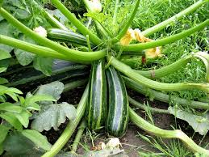
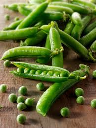

Produzione 2019
Zucchine

Coltivare in terreno molto ricco di materia organica e non coltivare dopo Solanacee o piante della stessa famiglia delle cucurbitacee.
- Varietà: Zucchina chiara di Faenza
- Periodo di Semina: Marzo/Aprile
- Primo raccolto: Fine Aprile
- Ultimo raccolto: Fine Luglio
-
Raccolto
| Dimensione |
Quantità |
| Piccole(10cm) |
16 |
| Medie(11-16cm) |
26 |
| Grandi(>16cm) |
9 |
|
51 |
-->Acquista Semi<--
Piselli

American Wonder: Varietà media precoce come ciclo colturale
Consigli
-
Piantare in semenzaio riscaldato.
È importante:
- Acquistare vasetti biodegradabili (di cocco o di cartone)
-
Mantenere areato il semenzaio per evitare muffe
- Non usare il coperchio del semenzaio
- Non usare mettere il semenzaio vicino al termosifone
- Fissare i sostegni nel terreno non appena le piantine raggiungono i 10cm
- Acquistare una rete con spazi di non più di 10cm per garantire sostegni adeguati
-->Acquista Semi<--